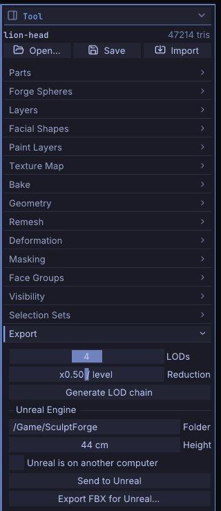

Exporting, Unreal and ZBrush
This chapter covers getting your sculpt out of SculptForge: the export formats and what each one keeps, LOD chains for games, sending a mesh straight into a running Unreal Editor, and exchanging models with ZBrush with Send to ZBrush. To keep everything (Parts, layers, mask, vertex paint, brushes) use a project file instead; see Projects, autosave and snapshots.
Export formats at a glance#
Exports write every visible Part. Hidden Parts are left out. Exporting doesn't rename the document or mark it saved, so your next Ctrl+S still saves the project.
| Format | Where in the app | Keeps | Use it for |
|---|---|---|---|
glTF binary (.glb) | File > Export GLB... (Ctrl+E) | One node per Part, sculpt layers as morph targets, vertex paint as vertex colour, UVs and the painted texture (embedded) | Games, Blender, three.js, web viewers |
LOD chain (.glb per level) | File > Export LOD Chain... | As GLB, one file per level, blend shapes on every level | Game engines |
OpenUSD (.usda, .usdz) | File > Export USD / USDZ... | One Mesh prim per Part, quads, layers as UsdSkel blend shapes, vertex paint as displayColor, UVs (primvars:st) and the painted texture through a preview material (inside a USDZ), loaded splats | Film pipelines, Omniverse, Apple AR Quick Look |
FBX for Unreal (.fbx) | File > Export FBX for Unreal... | Unreal naming and scale, quads, UVs, LOD group, layers as blend shapes, the painted texture as a PNG beside it | Unreal Engine (by hand) |
Wavefront OBJ (.obj) | File > Export OBJ... | One o object per Part, quads, face groups as g groups, vertex paint as vertex colour, UVs, the painted texture through a .mtl (map_Kd) and a PNG beside it. Layers are baked into the current blend | Any 3D app, ZBrush |
ZBrush GoZ-compatible (.GoZ) | File > Send to ZBrush > Export GoZ-compatible file... | Quads, face groups, mask, vertex paint, UVs, the painted texture as a PNG beside it | ZBrush |
STL (.stl) | File > Send to ZBrush > Export STL... | Geometry only (triangles), visible Parts merged, in millimetres with Z up | 3D printing |
PLY (.ply) | export_ply command | Geometry, quads and vertex paint, visible Parts merged | Scan tools, MeshLab, Blender |
| FBX (general) | export_fbx command | One model per Part, quads, UVs, blend shapes, optional LOD groups, the painted texture | Other FBX pipelines |
The GLB, LOD chain and FBX for Unreal exports are also in the Tool palette under Export, together with the LOD and Unreal settings.
"Quads" means the quads the model came in with (or got from Plane, Cube, Subdivide or Voxel Remesh) are written as quads, the rest as triangles; see Quads and triangles. glTF and STL can only hold triangles.


UVs are kept through OBJ, FBX, USD, glTF and GoZ-compatible files, in and out. A Part with a painted texture is exported with it: the PNG is written next to the file as <name>_color.png (<name>_<Part>_color.png with several Parts) and referenced by the model, or embedded in GLB and USDZ files. Spaces in the file name become _ in the names of the files written beside it (my scene.obj gets my_scene.mtl and my_scene_color.png), because OBJ and MTL separate file names with spaces. Tool > Texture Map > Auto UV gives any sculpt UVs before export. Normal, displacement and other maps come from Tool > Bake as separate image files.
Textured exports are checked against other tools, not only read back by SculptForge: GLB files pass the Khronos glTF validator with no errors or warnings; USD and USDZ files pass OpenUSD's validators (the USDZ files are uncompressed, 64-byte aligned and have the root layer first); FBX files load in ufbx's strict mode with their textures connected; and in all four formats plus OBJ, the texture is sampled the right way up (each format's UV convention), checked colour by colour against SculptForge's own sampling. The scripts are in tools/export_check/ in the source tree.
Scale and axes#
- glTF, USD and OBJ are written Y-up with 1 unit = 1 metre, the same space you sculpt in.
-
FBX uses centimetres:
export_fbxmultiplies positions by 100 by default (scale=), so 1 unit = 1 m. -
STL is written in millimetres with Z up, as slicers expect: a 0.3 m sculpt prints 300 mm tall, standing upright.
export_stl height_mm=80scales it to a print height instead (see 3D printing). Opening an STL converts back, so a downloaded print model comes in upright and at its real size. STL files from SculptForge 0.5 and earlier (metres, Y up) are recognised and open as they were saved. - PLY keeps positions as they are (no unit conversion).
- For Unreal, Height sets the real-world size directly (see below).
Export a model#
- Show the Parts you want to export and hide the others (the eye icon in Tool > Parts).
- Choose the export in the File palette and pick a file name.
- The status line confirms the export ("Exported ...").
A Part with subdivision levels is exported at the level you are on. To write the base cage (or any other level) without stepping to it, use subdiv_export path=base.obj level=1.
From a script, each format is one command:
sculptforge-cli -c 'open path=bust.sfproj; export_glb path=bust.glb'
sculptforge-cli -c 'open path=bust.sfproj; export_usd path=bust.usdz'
sculptforge-cli -c 'open path=bust.sfproj; save_obj path=bust.obj'
sculptforge-cli -c 'open path=bust.sfproj; export_fbx path=bust.fbx lods=3 ratio=0.5'
sculptforge-cli -c 'open path=bust.sfproj; export_stl path=bust.stl; export_ply path=bust.ply'3D printing#
File > Send to ZBrush > Export STL... writes every visible Part as one binary STL, ready for a slicer (PrusaSlicer, Cura, Bambu Studio, OrcaSlicer ...). The status line gives the printed size, for example "Exported lion.stl (47214 triangles, 320.8 x 206.6 x 436.4 mm)": width, depth and height as the slicer shows them.
-
Size: 1 unit in SculptForge is 1 m, so 1 unit becomes 1000 mm. To print at a given height, use
export_stl path=lion.stl height_mm=80, or scale the model in the slicer. - One solid: overlapping Parts go into the file as they are, which some slicers and print services reject. Merge visible them (Parts) and Remesh to turn them into one closed surface first.
- Detail: printers resolve about 0.05-0.1 mm, so millions of triangles rarely help. Decimate makes the file smaller without visible loss.
sculptforge-cli -c 'open path=bust.sfproj; export_stl path=bust.stl height_mm=120'
sculptforge-cli -c 'open path=bust.sfproj; export_stl path=bust.stl scale=1 z_up=false' # sculpt space as it isLOD chains for games#
A LOD (level of detail) chain is the same model at decreasing triangle counts, so an engine can draw distant objects cheaply. SculptForge builds it with quadric decimation, keeping blend shapes on every level.
- Open Tool > Export.
- Set LODs (2 to 6 levels, including LOD0) and Reduction (0.1 to 0.9: the triangle ratio from one level to the next, default 0.5).
- Click Generate LOD chain. A table lists each level with its triangle count and its share of LOD0.
- Click a level (LOD0, LOD1 ...) to inspect it in the viewport; the wireframe turns on. Click Sculpt to go back to the editable mesh.
- Export with LOD chain (GLB per level), or send it to Unreal (below). Changing the sliders clears the preview; click Generate LOD chain to build it again.
The LOD chain export writes <name>_LOD0.glb, <name>_LOD1.glb and so on next to the path you choose. With several visible Parts, each Part is decimated on its own.
sculptforge-cli -c 'open path=rock.obj; export_lods path=out/rock.glb levels=4 ratio=0.5'To reduce the sculpt itself instead of exporting copies, use Tool > Geometry > Decimate; see Subdivide, Remesh, Decimate and LODs.
Send to Unreal#
Send to Unreal exports an Unreal-ready FBX and imports it into a running Unreal Editor (5.x) on this computer or another one on your network. Nothing is installed into your project: it uses Unreal's built-in Python remote execution.
| Your sculpt | What arrives in Unreal |
|---|---|
| No sculpt layers | A static mesh SM_<Name> with the LOD chain from Tool > Export |
| Sculpt layers | A skeletal mesh SK_<Name> with one morph target per layer (Unreal adds a single root bone) |
| Several visible Parts | One FBX model per Part, combined into one asset on import |
| Any | A material slot M_Clay, and the real-world size from Height |
| A baked normal map (Tool > Bake) | The texture T_<Name>_N, set up as a normal map (Unreal on this computer only) |
| A texture with material channels | T_<Name>_BC, T_<Name>_N (DirectX) and T_<Name>_ORM (occlusion, roughness, metallic), plus T_<Name>_E when emissive is painted, and a material M_<Name> built from them and assigned to the mesh (Unreal on this computer only; see Export presets) |
Sending the same asset again updates it in place (same name and folder), so references in your levels stay intact.
One-time setup in Unreal#
- Edit > Plugins: enable Python Editor Script Plugin, then restart the editor.
- Edit > Project Settings > Plugins > Python: tick Enable Remote Execution?.
That's all when Unreal runs on the same computer.
Send#
- Open Tool > Export and find the Unreal Engine section.
-
Set Folder (the content folder, default
/Game/SculptForge) and Height (the model's height in Unreal, in centimetres; it starts at the model's current height with 1 unit = 1 m). - For a static mesh, set LODs and Reduction above (default 4 levels).
- Click Send to Unreal, or press Ctrl+U. The status line reports the result.
The line under the buttons tells you what will be sent: "Static mesh with 4 LODs" or "Skeletal mesh with 2 morph targets".
Unreal on another computer#
-
On the Unreal machine, in Project Settings > Plugins > Python, open Advanced and set Multicast Time-To-Live to
1and Multicast Bind Address to0.0.0.0. - In SculptForge, tick Unreal is on another computer.
- Both computers must be on the same network, and the SculptForge computer's firewall must allow incoming connections from the Unreal machine: the editor connects back to SculptForge to fetch the file.
Import by hand#
Export FBX for Unreal... (in the File palette and in Tool > Export) writes the same file. The file name becomes the asset name. Drag it into the Content Browser: static meshes pick up their LODs from the file's LOD group; for skeletal meshes choose Skeletal Mesh and tick Import Morph Targets.
From scripts#
sculptforge-cli -c 'open path=statue.obj; unreal_send destination=/Game/Props height_cm=200 lods=4'
sculptforge-cli -c 'unreal_editors network=true' # list editors on the network
sculptforge-cli -c 'open path=statue.obj; export_unreal folder=out height_cm=200'unreal_send also takes name=, project= (pick one editor when several are open) and network=true.
Exchange models with ZBrush (Send to ZBrush)#
SculptForge reads and writes ZBrush's GoZ format and can talk to a running ZBrush through the Send to ZBrush on Windows and macOS. The commands are in File > Send to ZBrush:
| Item | What it does |
|---|---|
| Send to ZBrush | Writes every visible Part to the shared bridge folder and tells ZBrush (starting it if needed). Each Part arrives as its own ZBrush SubTool. Turns on Receive automatically |
| Receive from ZBrush | Loads what ZBrush last sent. Each object updates the Part it was sent from (one undo step), or becomes a new Part |
| Receive automatically | Checks once a second for a new send from ZBrush and receives it |
| Custom bridge folder (optional) | Use another bridge folder, for example inside a Wine prefix |
| Import GoZ-compatible file... | Opens a .GoZ file, replacing the scene |
| Export GoZ-compatible file... | Writes a .GoZ file. With several visible Parts, one file per Part next to the path |
| Export STL... | Writes a binary STL of the visible Parts |
The default bridge folder is C:\Users\Public\Pixologic on Windows and /Users/Shared/Pixologic on macOS. ZBrush doesn't run on Linux, so there the bridge needs a custom folder; GoZ-compatible files still import and export.
A round trip#
- In SculptForge, choose File > Send to ZBrush > Send. ZBrush starts or comes forward with the Parts. If ZBrush was not running and does not import them, press GoZ in ZBrush.
- Work in ZBrush, then press GoZ there to send the model back.
- SculptForge receives it automatically and updates the matching Parts. Each update is an undo step on that Part.
The bridge keeps face groups, mask, vertex paint and UVs. Quads from ZBrush stay quads: Wire shows them as quads, and they go back to ZBrush as the same quads. The format has no hidden-face flag, so hidden faces are sent like any others.
From scripts: goz_export path=, goz_import path=, goz_send, goz_receive and export_stl path= (see 3D printing for its options).
Blender#
To sculpt Blender objects in SculptForge and send them back into the same objects, use the SculptForge Bridge add-on and File > Blender: see Working with Blender. For a one-off exchange, OBJ, FBX and glTF all carry Parts, UVs and quads both ways.
Maya#
To sculpt Maya meshes in SculptForge and send them back into the same objects, use the SculptForge shelf for Maya and File > Maya: see Working with Maya.
See also#
- Working with Blender: the Blender add-on
- Working with Maya: the Maya shelf script
- Projects, autosave and snapshots: save everything, not just the mesh
- Parts: which Parts are exported
- Layers and blend shapes: what becomes morph targets
- Subdivide, Remesh, Decimate and LODs: decimate before exporting
- Gaussian splats: saving splats
- For studios: formats in a pipeline